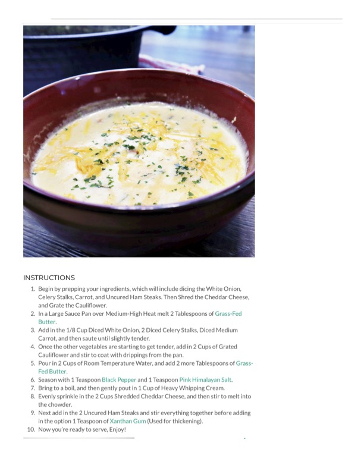

Ham & Cheddar Cauliflower Chowder

Original cookbook page 26
A creamy, hearty chowder made with uncured ham steaks, cheddar cheese, and cauliflower — a comforting, lower-carb take on classic chowder.
Ingredients
- 1/8 cup diced white onion
- 2 celery stalks, diced
- 1 medium carrot, diced
- 2 uncured ham steaks
- 2 cups grated cauliflower
- 2 cups shredded cheddar cheese
- 4 tablespoons grass-fed butter (divided: 2 Tbsp + 2 Tbsp)
- 2 cups room temperature water
- 1 cup heavy whipping cream
- 1 teaspoon black pepper
- 1 teaspoon pink Himalayan salt
- 1 teaspoon xanthan gum (optional, for thickening)
Instructions
- Begin by dicing the white onion, celery stalks, carrot, and uncured ham steaks. Shred the cheddar cheese and grate the cauliflower.
- In a large sauce pan over medium-high heat, melt 2 tablespoons of grass-fed butter.
- Add in the diced white onion, celery stalks, and carrot. Sauté until slightly tender.
- Once the other vegetables are starting to get tender, add in grated cauliflower and stir to coat with drippings.
- Pour in 2 cups of room temperature water and add 2 more tablespoons of grass-fed butter.
- Season with black pepper and pink Himalayan salt.
- Bring to a boil, then gently pour in heavy whipping cream.
- Evenly sprinkle in the shredded cheddar cheese, and stir to melt into the chowder.
- Add in the uncured ham steaks and stir everything together before adding optional xanthan gum for thickening.
- Serve hot. Garnish with fresh herbs and extra shredded cheese if desired.
Recipe #26 from collection